Empire Stone × Empire Granite — QA
Golden Path — BOQ: Cut List หลังขาย
อัปเดตล่าสุด: 3 พฤศจิกายน 2569 (2026-11-03) · รันจริงบน eg-tst ผ่านหน้าจอ ใช้ผู้ใช้ emgdemo บริษัท Empire Granite
ขายและยืนยันจาก BOQ ก่อน แล้วได้ Cut List ทีหลัง: นำเข้า Cut List เข้า BOQ ที่ขายไปแล้ว · ชิ้นงานถึงใบเสนอราคาและใบสั่งผลิตโดยราคาไม่เปลี่ยน · เทียบ ตร.ม. · สร้าง BOQ ฉบับใหม่ · ผลิต ส่งของ ใบแจ้งหนี้ · เฉพาะ happy path
ประเด็นที่ต้องการการยืนยัน (ผู้จัดทำตัดสินใจแทนไปก่อน โปรดยืนยันหรือแจ้งให้ปรับ)
- ส่วนที่ Cut List เกินยอดที่เสนอ ไม่เรียกเก็บ — ใบแจ้งหนี้ไม่เกินจำนวนที่เสนอ (8.640 แม้ส่งจริง 8.700) ส่วนเกินต้องออกเป็นใบเสนอราคาใหม่ ขอยืนยันว่าต้องการแบบนี้ หรืออยากให้เรียกเก็บตามจริงเป็นตัวเลือก
- ของที่ส่งเกิน (0.06 ตร.ม.) — ใบส่งของยังส่งตามชิ้นที่ผลิตจริง 8.700 จึงเป็นของที่ส่งโดยไม่ได้เรียกเก็บ ขอยืนยันว่ายอมรับได้ หรือให้ระบบเตือนตอนส่ง
- ค่าบริหารโครงการ 10% ของยอดงานรวม — คิดตอนออก BOQ แล้วคงที่ ไม่คำนวณใหม่ตามยอดจริง ขอยืนยันว่าเป็นไปตามต้องการ
- Slab ห้ามซ้ำระหว่างใบสั่งผลิตที่ยังไม่เสร็จ — ระบบเลือกให้คนละแผ่น และไม่ให้บันทึกถ้าเลือกซ้ำด้วยมือ ขอยืนยันว่าไม่มีกรณีที่ต้องใช้แผ่นเดียวกันหลายใบ
13Test Case ทั้งหมด
5หมวด
12High Priority
1Medium Priority
0Low Priority
ตรวจซ้ำ 3 พ.ย. 2569 (boq_estimation 1.56.1): เดินซ้ำครบทุกเคสแล้ว
- ทำตามทีละขั้นด้วย คู่มือกดตาม BOQ Cut List หลังขาย · เอกสารนี้ใช้ตรวจว่าผลตรงตามที่ควรเป็น
- ต้องทำ คู่มือกดตาม Setup ระบบ ตอน 2 มาก่อน และมี Slab ZZ2 GUIDE MARBLE ที่ Available อย่างน้อย 5 แผ่น · วิธีนำเข้า BOQ จาก Excel อยู่ใน คู่มือ BOQ ค่าแรง/วัสดุเป็นรายการ
- เลขเอกสารในเอกสารนี้เป็นของรอบตรวจซ้ำ (BOQ1500 · S02157 · EG01/STFG/00614–00615 · EG01/OUT/00943 · INV/2026/00031) · เจอและแก้ 2 จุด: ผลิตห้องประชุมไม่ได้เพราะกฎชิ้นเต็ม (ชิ้น 90 × 82 ซม.) และหน้ารายชิ้นไม่มีคอลัมน์ · กับดัก: ต้องติ๊ก Picked ให้ครบก่อน Validate ใบส่งของ
- ขอบเขต 13 เคส: ขายก่อน 1 · เตรียมและนำเข้า Cut List 3 · ผลถึงใบเสนอราคาและใบสั่งผลิต 3 · เทียบ ตร.ม. และ BOQ ฉบับใหม่ 2 · ผลิต ส่งของ เก็บเงิน 4
- ชุดนี้รันหลังแก้บั๊กระหว่างทำเส้นทางนี้และเส้นทางถัดไป: boq_estimation 19.0.1.54.3 และ stone_slab_inventory 19.0.2.109.65 (รายละเอียดในกล่องด้านล่างและในกล่องข้อสังเกตแต่ละเคส)
A. ขายก่อน — ยังไม่มี Cut List
BOQ 2 โซน ออกใบเสนอราคาและยืนยันขายตามที่ประเมิน · 1 test case
| TC ID | Scenario | Precondition | Steps | ข้อมูลตัวอย่าง | Expected Result | Priority | ภาพหน้าจอ |
|---|---|---|---|---|---|---|---|
| TC-GP-BQ2-01 | ยืนยันขายจาก BOQ ที่ยังไม่มี Cut List BOQ นี้สร้างจากไฟล์ boq-import-zz2-meeting.xlsx (วิธีนำเข้าดูคู่มือ BOQ ค่าแรง/วัสดุเป็นรายการ ตอน 2) · ใบเสนอราคาแตกชิ้นให้เองจากขนาด 60 × 120 ซม. เพราะ 8.64 ÷ 0.72 หารลงตัว 12 ชิ้น |
เข้าระบบเป็น Empire Granite · มีสินค้า ZZ2 GUIDE MARBLE Countertop · มี Slab ZZ2 GUIDE MARBLE ที่ Available อย่างน้อย 5 แผ่น · ไฟล์ boq-import-zz2-meeting.xlsx |
|
โซน ห้องประชุม: ZZ2 GUIDE MARBLE Countertop 60 × 120 × 2 ซม. 8.64 ตร.ม. · โซน ห้องน้ำ: 60 × 120 × 2 ซม. 4.32 ตร.ม. · ค่าแรง 900 ต่อ ตร.ม. ทั้งสองโซน | BOQ (รอบทดสอบ BOQ1500) Direct Cost 60,912.00 · Overhead 6,091.20 · Total 67,003.20 · ใบเสนอราคา (S02157) บรรทัดห้องประชุม 8.640 m² × 4,700.00 (60 × 120 ซม. × 12 ชิ้น) · ห้องน้ำ 4.320 m² × 4,700.00 (× 6 ชิ้น) · Untaxed 67,003.20 · VAT 4,690.22 · Total 71,693.42 · หลัง Confirm ปุ่มสมาร์ท Delivery 1 · FG Production 2 | High | 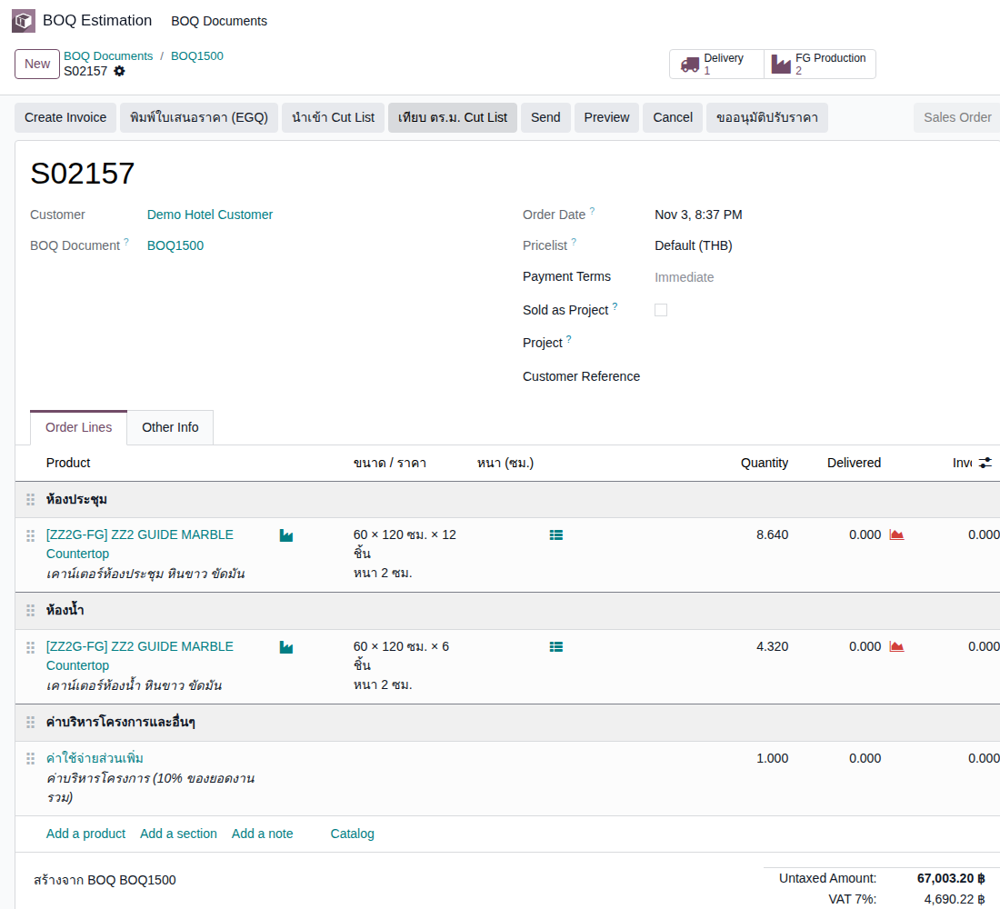 |
B. เตรียมและนำเข้า Cut List
เลือกรายการที่ใช้ · ดาวน์โหลดเทมเพลต · นำเข้าและตรวจหน้าตัวอย่าง · 3 test cases
| TC ID | Scenario | Precondition | Steps | ข้อมูลตัวอย่าง | Expected Result | Priority | ภาพหน้าจอ |
|---|---|---|---|---|---|---|---|
| TC-GP-BQ2-02 | ระบุ รายการที่ใช้ในโปรเจกต์นี้ และดาวน์โหลดเทมเพลต Cut List ไฟล์ที่ได้มี dropdown โซน (ห้องประชุม/ห้องน้ำ) และ dropdown รายการ จึงพิมพ์ชื่อโซนผิดไม่ได้ · ช่องพื้นที่ (ตรม.) เป็นสูตร ไม่ต้องกรอก |
ทำ TC-GP-BQ2-01 เสร็จแล้ว |
|
รายการ = [ZZ2G-FG] ZZ2 GUIDE MARBLE Countertop | ปุ่ม ดาวน์โหลดเทมเพลต Cut List ปรากฏหลังเลือกรายการ · ได้ไฟล์ CutList-Template-BOQ1500.xlsx แผ่น Cut List (คอลัมน์ Elevation / Zone · รหัสชิ้น · รายการ · กว้าง (ซม.) · สูง (ซม.) · ตรม. · หมายเหตุ) แผ่น ItemList 1 รายการ แผ่น ZoneList 2 โซน | High | |
| TC-GP-BQ2-03 | อัปโหลด Cut List และตรวจหน้าตัวอย่าง ใบเสนอราคาออกไปแล้ว จึงเติมได้เฉพาะบรรทัดเดิมของโซนเดียวกัน ไม่สร้างบรรทัดใหม่และไม่เปลี่ยน ตร.ม./ราคา · หน้าตัวอย่างแสดงส่วนต่างให้เห็นก่อนยืนยัน |
ทำ TC-GP-BQ2-02 เสร็จแล้ว · ไฟล์ cutlist-import-zz2-meeting.xlsx |
|
ห้องประชุม 12 ชิ้น: M1–M6 ขนาด 60 × 120 ซม. และ M7–M12 ขนาด 90 × 82 ซม. · ห้องน้ำ 6 ชิ้น: W1–W6 ขนาด 60 × 120 ซม. | ตารางตัวอย่าง 2 แถว: ห้องประชุม 12 แถว รวม 8.7480 · ที่ประเมินไว้ 8.64 · ส่วนต่าง 0.11 · ผลจับคู่ ต่างกัน +0.11 ตร.ม. · ห้องน้ำ 6 แถว รวม 4.3200 · ที่ประเมินไว้ 4.32 · ส่วนต่าง 0.00 · ตรงกัน · ข้อความด้านบนบอกว่าตร.ม./ราคาในใบเสนอราคาไม่เปลี่ยน | High | 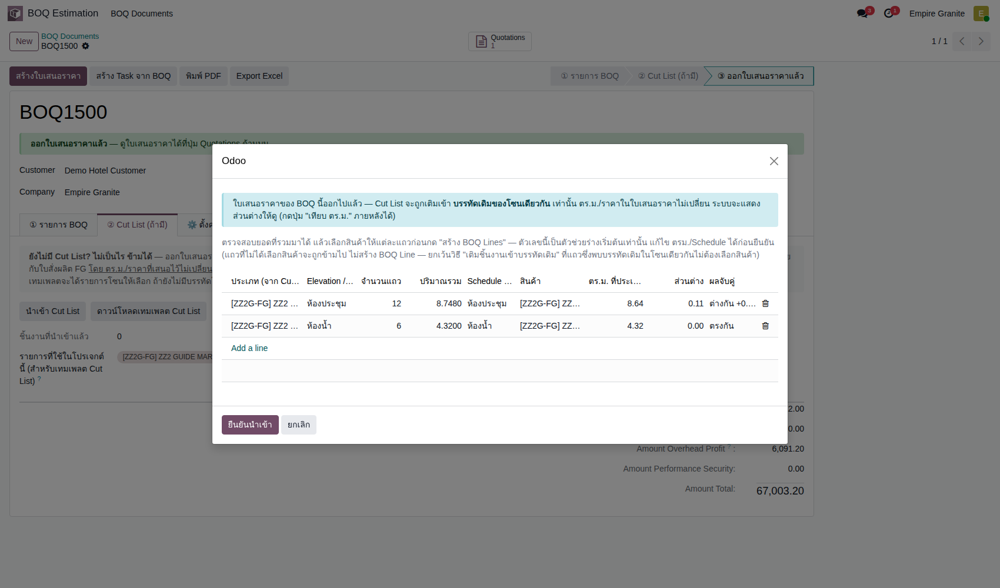 |
| TC-GP-BQ2-04 | ยืนยันนำเข้า และดูข้อความแจ้งผล ข้อความแจ้งผลเป็นแถบเหลืองค้างบนจอ (เพราะมีส่วนต่าง) อ่านให้ครบก่อนปิด |
ทำ TC-GP-BQ2-03 เสร็จแล้ว |
|
- | ข้อความ: ห้องประชุม: ประเมิน 8.64 / Cut List 8.75 ตร.ม. (ต่างกัน +0.11 — ยังใช้ยอดประเมินเดิม) · S02157: ส่ง 12 ชิ้นถึงบรรทัดแล้ว (ยอดและจำนวนที่เสนอคงเดิม) · ห้องน้ำ: ประเมิน 4.32 / Cut List 4.32 ตร.ม. (ตรงกัน) · S02157: ส่ง 6 ชิ้นถึงบรรทัดแล้ว · ช่อง ชิ้นงานที่นำเข้าแล้ว = 18 | High | 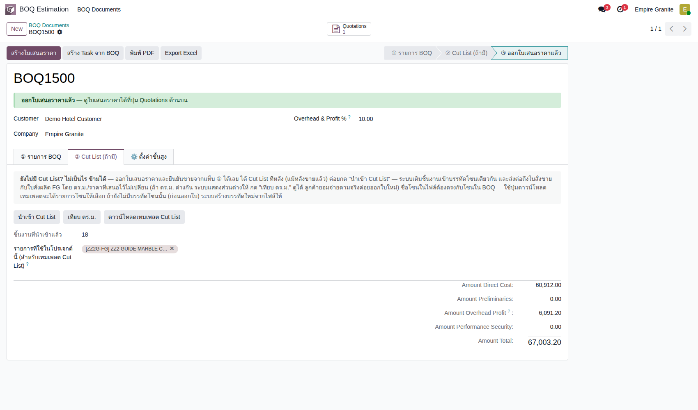 |
C. ผลถึงใบเสนอราคาและใบสั่งผลิต
ชิ้นเปลี่ยนแต่ราคาไม่เปลี่ยน · รายชิ้น · รายการตัดของโรงงานไม่ซ้อน · 3 test cases
| TC ID | Scenario | Precondition | Steps | ข้อมูลตัวอย่าง | Expected Result | Priority | ภาพหน้าจอ |
|---|---|---|---|---|---|---|---|
| TC-GP-BQ2-05 | ใบเสนอราคาได้ชิ้นจาก Cut List แต่ ตร.ม./ราคา/ยอดเดิม ใบเสนอราคาเปลี่ยนเฉพาะช่องขนาด/ราคา (ชิ้น) ส่วนจำนวน ราคาต่อหน่วย และยอดรวมคงเดิม |
ทำ TC-GP-BQ2-04 เสร็จแล้ว |
|
- | บรรทัดห้องประชุมแสดง 60 × 120 ซม. × 6 ชิ้น และ 90 × 82 ซม. × 6 ชิ้น (จากเดิม 60 × 120 × 12 ชิ้น) · Quantity ยัง 8.640 · ราคา 4,700.00 · บรรทัดห้องน้ำ 60 × 120 ซม. × 6 ชิ้น Quantity 4.320 · Untaxed ยัง 67,003.20 · Total 71,693.42 | High | 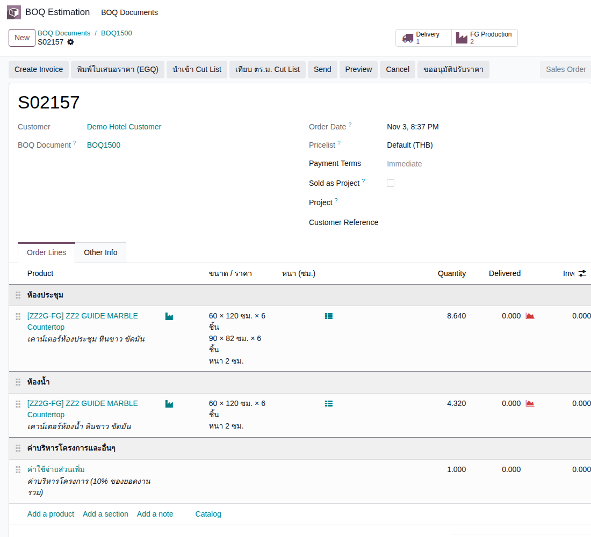 |
| TC-GP-BQ2-06 | ตรวจรายชิ้นของบรรทัดห้องประชุม แถวรายชิ้นเดิมที่ระบบแตกให้ตอนออกใบเสนอราคา (60 × 120 × 12) ต้องถูกแทนที่ ไม่ค้างอยู่ข้างชิ้นจาก Cut List (บั๊กนี้เจอและแก้แล้วเมื่อ 3 พ.ย. 2569) · หน้ารายชิ้นเคยแสดงแต่คอลัมน์ ID แก้แล้วในรอบตรวจซ้ำ (boq_estimation 1.56.1) |
ทำ TC-GP-BQ2-05 เสร็จแล้ว |
|
- | ตาราง 12 แถว (1-12 / 12): คอลัมน์ รหัสชิ้น · กว้าง (ซม.) · สูง (ซม.) · ตรม. · ลงแผนตัดใน MO: M1–M6 60.00 × 120.00 ตร.ม. 0.72 · M7–M12 90.00 × 82.00 ตร.ม. 0.74 (0.738 ปัดเป็น 2 ตำแหน่ง) · ไม่มีแถว 60 × 120 จำนวน 12 ค้างอยู่ | High | 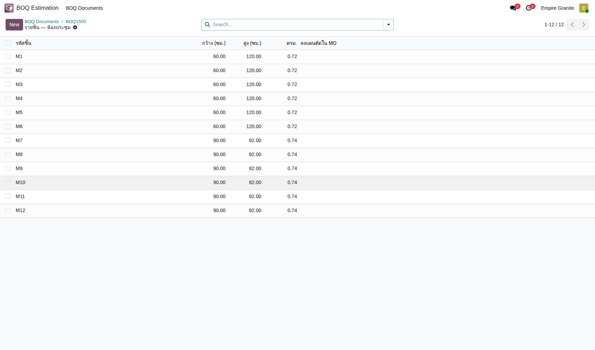 |
| TC-GP-BQ2-07 | ใบสั่งผลิต (Draft) ได้รายการตัดตาม Cut List ไม่ซ้อน ผลที่ผิดก่อนแก้: แถวเดิม 12 ชิ้น + M1–M12 ซ้อนกัน ใบสั่งผลิตขอ Slab 19.07 ตร.ม. ทั้งที่งานจริงราว 9.6 ตร.ม. · ตอนนี้ต้องไม่ซ้อน |
ทำ TC-GP-BQ2-06 เสร็จแล้ว |
|
- | ใบสั่งผลิต (EG01/STFG/00614) Draft · ต้องใช้ 9.57 ตร.ม. (8.70 + เผื่อเสีย 10%) · Slab ที่เลือก 13.05 ตร.ม. ป้าย พอ · แท็บ ผลผลิต FG มี 12 แถว M1–M12 (6 แถว 0.60 × 1.20 และ 6 แถว 0.90 × 0.82 จำนวนแถวละ 1) · ไม่มีแถว จำนวน 12 ค้างอยู่ · ใบของห้องน้ำมี 6 แถว W1–W6 | High | 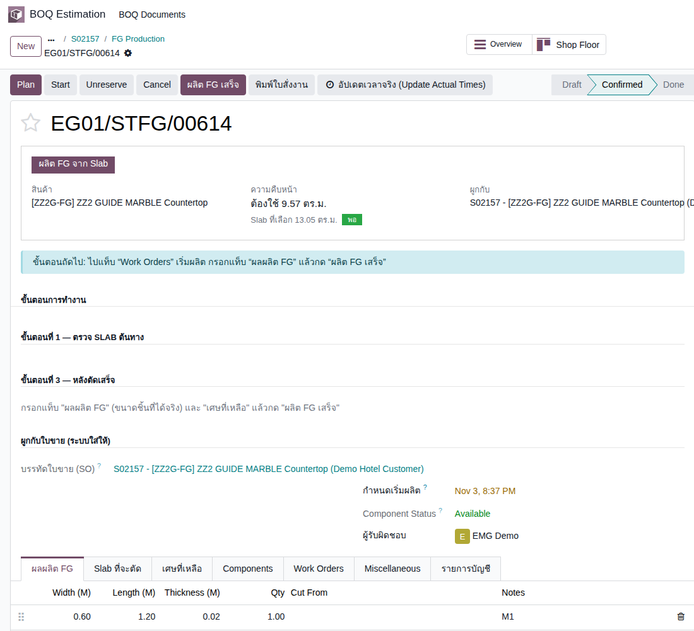 |
D. เทียบ ตร.ม. และ BOQ ฉบับใหม่
ดูส่วนต่างรายโซน · ถ้าลูกค้ายอมจ่ายเพิ่ม สร้าง BOQ ฉบับใหม่ · 2 test cases
| TC ID | Scenario | Precondition | Steps | ข้อมูลตัวอย่าง | Expected Result | Priority | ภาพหน้าจอ |
|---|---|---|---|---|---|---|---|
| TC-GP-BQ2-08 | เทียบ ตร.ม. ระหว่างใบเสนอราคา Cut List และ Slab หน้าต่างนี้ดูอย่างเดียว ไม่แก้ข้อมูล · ถ้าลูกค้าไม่ยอมจ่ายเพิ่ม ไม่ต้องทำอะไร ส่วนต่างเป็นต้นทุนของโครงการ |
ทำ TC-GP-BQ2-04 เสร็จแล้ว |
|
- | ห้องประชุม: เสนอราคา 8.64 · Cut List 8.75 · ส่วนต่าง 0.11 · Cut List เกินใบเสนอราคา · Slab ที่เลือก 13.05 พอ (เหลือ 4.30) · ลงแผนตัด 8.75 · ห้องน้ำ: 4.32 · 4.32 · 0.00 · ตรงกัน · Slab 8.70 พอ (เหลือ 4.38) · มีปุ่ม สร้าง BOQ ฉบับใหม่ตาม Cut List และปุ่ม ปิด | High | 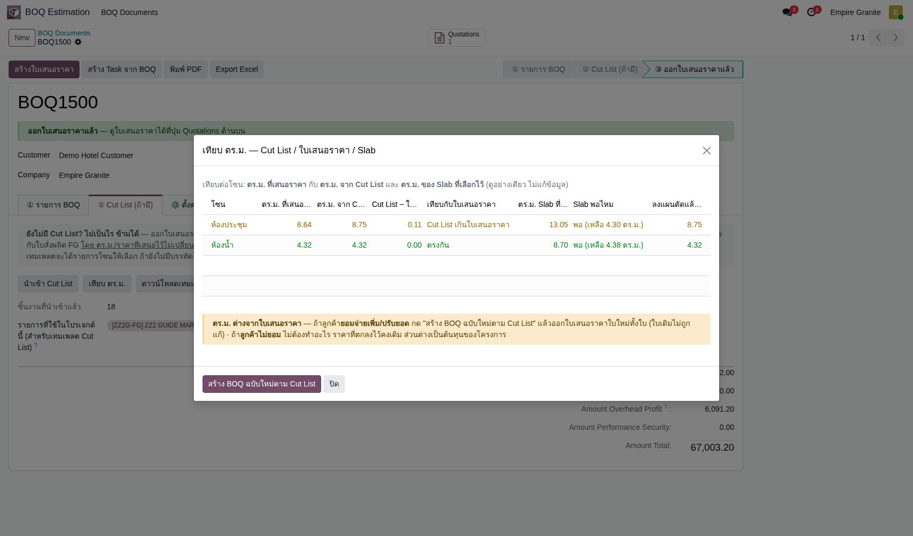 |
| TC-GP-BQ2-09 | สร้าง BOQ ฉบับใหม่ตาม Cut List (ลูกค้ายอมจ่ายเพิ่ม) ได้ BOQ ใบใหม่เสมอ ใบเสนอราคาเดิมและราคาที่ล็อกไว้ไม่ถูกแก้ · ผู้ใช้ต้องกด สร้างใบเสนอราคา ที่ BOQ ใบใหม่เองเมื่อพร้อม |
ทำ TC-GP-BQ2-08 เสร็จแล้ว |
|
- | เปิด BOQ ใบใหม่ (รอบทดสอบ BOQ1502) สถานะ Draft · ห้องประชุม 8.75 ตร.ม. รวม 41,125.00 · ห้องน้ำ 4.32 ตร.ม. รวม 20,304.00 · Amount Total 67,571.90 (BOQ1500 เดิมยัง 67,003.20 และใบเสนอราคา S02157 ไม่ถูกแก้) | Medium | 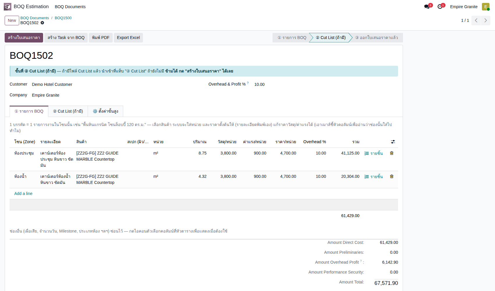 |
E. ผลิต ส่งของ และเก็บเงินตาม Cut List
ผลิตทั้งสองใบ · Slab ไม่ซ้ำกัน · ส่งของ · ใบแจ้งหนี้ไม่เกินใบเสนอราคา · 4 test cases
| TC ID | Scenario | Precondition | Steps | ข้อมูลตัวอย่าง | Expected Result | Priority | ภาพหน้าจอ |
|---|---|---|---|---|---|---|---|
| TC-GP-BQ2-10 | ผลิตใบสั่งผลิตห้องประชุมจนเสร็จ และดูต้นทุน ใบนี้ใช้ Slab 3 แผ่น เพราะพื้นที่ตาม Cut List ต้องการ 9.57 ตร.ม. เกิน 2 แผ่น (8.70) · ระบบเลือก Slab ของใบห้องน้ำให้คนละแผ่นกับใบนี้ ทั้งที่ทั้งสองใบยังเป็น Draft · ค่าแรง 1,500 ต่อ ตร.ม. คิดจากพื้นที่ผลผลิต 8.70 · เคยเป็นบั๊ก: กด ผลิต FG เสร็จ แล้วขึ้น "ส่งได้เป็นชิ้นเต็มเท่านั้น" เพราะชิ้น 90 × 82 ซม. (0.738) เก็บในสต็อกปัดเป็น 0.73 · แก้แล้วและตรวจซ้ำ (stone_slab_inventory 19.0.2.109.70): ส่ง/ผลิตทั้ง Lot ผ่านได้เสมอ |
ทำ TC-GP-BQ2-07 เสร็จแล้ว |
|
- | Confirm แล้วสถานะ Confirmed (Slab ที่จะตัด: BLK-26-1486-18, -19, -20) · หลังผลิตเสร็จ Done · รายการบัญชี Posted 3 รายการ: Inventory Valuation 12,218.38 สองรายการ (Slab 3 แผ่น) และ FG Production Labor 13,050.00 (8.70 ตร.ม. × 1,500) | High | 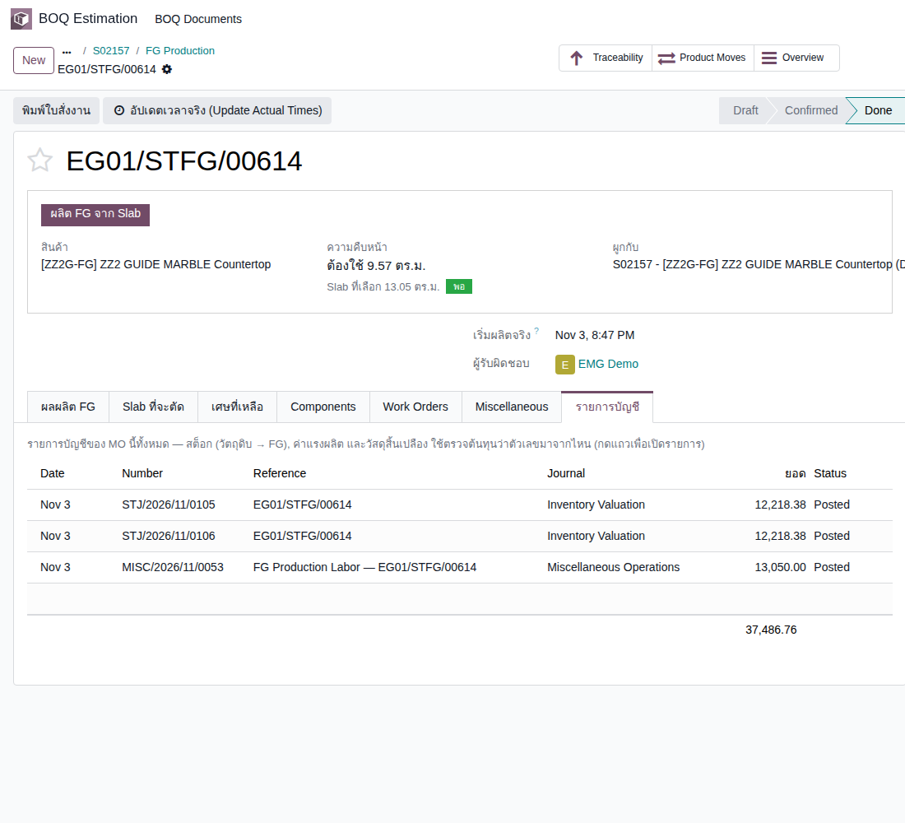 |
| TC-GP-BQ2-11 | ใบสั่งผลิตห้องน้ำ: ระบบเลือก Slab คนละแผ่นกับใบแรก แล้วผลิตจนเสร็จ เคยเป็นบั๊ก: ใบสั่งผลิต Draft สองใบได้ Slab ชุดเดียวกัน พอใบแรกใช้ไปแล้ว ใบที่สอง ย้ายไปสถานีตัด ไม่ได้ · แก้แล้วและตรวจซ้ำ (stone_slab_inventory 19.0.2.109.64): ปุ่ม เลือก Slab อัตโนมัติ ข้ามแผ่นที่ใบ Draft อื่นรายการไว้แล้ว |
ทำ TC-GP-BQ2-10 เสร็จแล้ว |
|
- | Slab ที่เลือก BLK-26-1486-21 และ -22 (8.70 ตร.ม. พอสำหรับ 4.75) ไม่ซ้ำกับสามแผ่นของใบห้องประชุม · ไม่มีข้อความผิดพลาด · Confirm และผลิตเสร็จผ่าน สถานะ Done · รายการบัญชี: Slab 8,145.59 สองรายการ และค่าแรง 6,480.00 (4.32 × 1,500) | High | 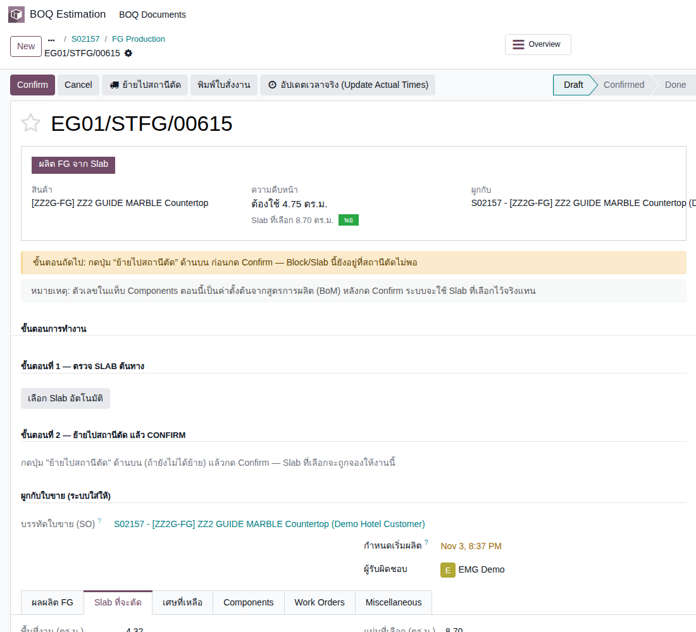 |
| TC-GP-BQ2-12 | ส่งของตามใบส่งของ ต้องติ๊ก Picked ให้ครบก่อน Validate ไม่เช่นนั้นระบบถามเรื่อง Backorder และ No Backorder จะยกเลิกบรรทัดที่ไม่ได้ติ๊ก · ใบส่งของห้องประชุม Demand 8.640 (ตามที่ขาย) แต่ Quantity 8.700 (ตามพื้นที่ที่ผลิตได้จริงจากชิ้นใน Cut List) |
ทำ TC-GP-BQ2-11 เสร็จแล้ว |
|
- | ใบส่งของ (EG01/OUT/00943) Ready ก่อนกด · บรรทัดห้องประชุม Demand 8.640 Quantity 8.700 · บรรทัดห้องน้ำ Demand 4.320 Quantity 4.320 · หลัง Validate สถานะ Done | High | 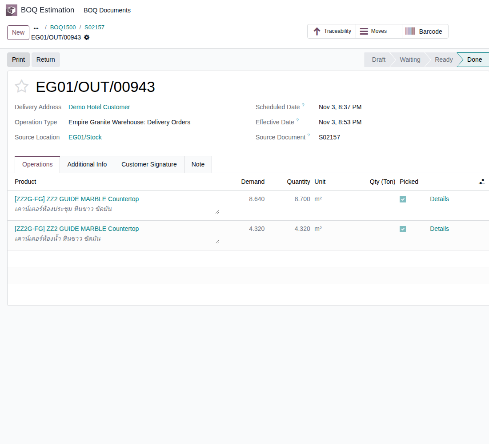 |
| TC-GP-BQ2-13 | ใบแจ้งหนี้ไม่เกินยอดที่เสนอ เคยเป็นบั๊ก: ใบแจ้งหนี้คิดตามพื้นที่ที่ส่งจริง 8.700 จึงสูงกว่าใบเสนอราคา 282.00 (0.06 × 4,700) ทั้งที่ข้อความตอนนำเข้าบอกว่ายอดและจำนวนที่เสนอคงเดิม · แก้แล้วและตรวจซ้ำ (boq_estimation 19.0.1.54.2): บรรทัดที่ล็อกยอดตามใบเสนอราคาออกใบแจ้งหนี้ได้ไม่เกินจำนวนที่สั่ง ส่วนที่ส่งเกิน (0.06 ตร.ม.) ต้องเป็นใบเสนอราคาใหม่ · ค่าบริหารโครงการ 6,091.20 ไม่ถูกคำนวณใหม่ |
ทำ TC-GP-BQ2-12 เสร็จแล้ว |
|
- | ใบแจ้งหนี้ (INV/2026/00031) Posted · บรรทัดห้องประชุม 8.640 × 4,700.00 = 40,608.00 · ห้องน้ำ 4.320 × 4,700.00 = 20,304.00 · ค่าบริหารโครงการ 6,091.20 · ก่อน VAT 67,003.20 (เท่าใบเสนอราคา) · VAT 4,690.22 · รวม 71,693.42 | High | 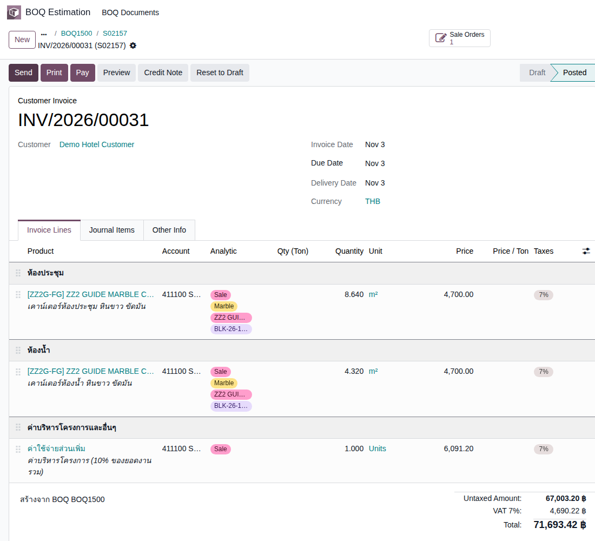 |